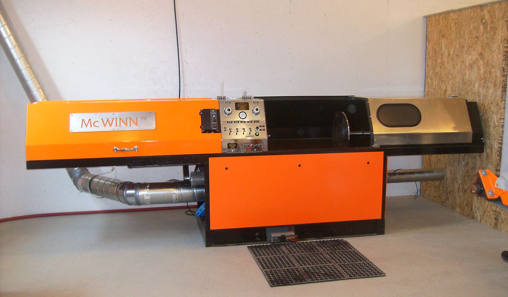

Did you know that cleaning your air filter regularly saves you the cost of buying a new filter? We sell air filter cleaning machines for customers across Canada.
Why throw away your air filter when you can clean it? We have one of the most reliable industrial-strength air filter cleaning systems available. Using a completely dry process, our patented air filter dry cleaning system can clean your filter to perform like new.

Our cleaning system combines rapid spinning with injected air and vacuum to clean the filter paper of all restricting particles. The dry process allows you to clean your filter 8-10 times as opposed to the standard procedure of washing.
Another reason to invest in our cleaning system is to contribute to the environment. Every year, thousands of air filters are sent to landfills. Our patented process allows you to use your air filter multiple times.
Buy our air filter cleaning machine for your business or personal use.
Dry process cleans filters 8-10 times vs. 2-3 with standard washing.
Contribute to the environment while significantly reducing your costs.
Contact us to learn about purchasing, licensing, or leasing options.
Call Toll-Free 888-483-7074